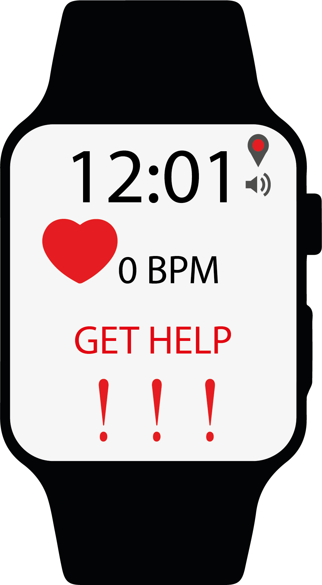

Voordat u start met de hele pagina door te lezen opzoek naar dat wat relevant is voor u,
laat mij helpen! Voor het concept voor een wearable gaat u naar The Helper.
Is dat toch niet wat u zoekt, maar wilt u mijn onderzoek zien? Ga dan naar het onderzoek.
Als laatst heb ik nog een reflectie geschreven die u nog wel zou willen lezen, ga dan naar mijn reflectie.
The Helper
The Helper
The Helper is een horloge, smartwatch, die wordt uitgedeeld bij opname in instantie. De instantie is gericht op mensen die last hebben van een psychische stoornis zoals een (manische) depressie.
Wanneer iemand wordt opgenomen, krijgt hij of zij The Helper. The Helper houdt de dragers hartslag, emoties en locaties in de gaten. Wanneer iemands hartslag of emoties boven een bepaalde basislijn komen, dan krijgt hij en de verzorging een melding dat er gekeken moet worden.
De melding is voor de drager een trilling aan zijn pols. De verzorging wordt gepingd zodat er direct naar de persoons plaats gegaan kan worden, dit kan voorkomen dat iemand wegloopt of zichzelf pijn doet. De GPS staat altijd aan, maar zodra er iets aan de hand is, krijgt de verzorging bij de ping ook de locatie.
De drager heeft in een normale staat van The Help en bij een alarmstaat de mogelijkheid om op een help button te drukken.
Wanneer de hartslag van de drager op 0 BPM (beats per minutes) komt, dan gaat er nog een melding uit met de locatie.
Niet alleen de locatie wordt nogmaals gepushed, maar ook maakt The Help een alarm geluid om aandacht te trekken van omstandiger.

The Helper richt zich voornamelijk op de drager en op de communicatie met de verzorging. Zoals al aangegeven wordt The Help gedragen door mensen die zijn opgenomen voor hun geestelijke gezondheid. De drager mag tijdens de opname of later als dit is aangegeven The Helper niet afnemen.
Wanneer dit gebeurt verdwijnt er de BPM wat een directe melding geeft dat er iets aan de hand is. Hierop staat een boete.
The Helper wordt gedragen om de pols waarna die niet meer af mag, tenzij deze wordt opgeladen. Opladen wordt gedaan door personeel en alleen wanneer de drager veilig in de instelling zit.
The Helper maakt gebruik van een aantal sensoren: GPS en BH1790GIC (hartrate monitor). Voor het meten van stress, leest The Helper de electrodermal activiteit op het lichaam.
De emoties worden geregistreerd door middel van temperatuur, stress en hartslag totdat de techniek zover is om emoties via een apparaat te lezen.
The research
Smart Socks
Sokken: Sensoria fitness heeft een aantal wearables uitgebracht waaronder de “smart socks”. Zoals de naam al doet vermoedde is dit een wearable gemaakt van sokken om hardlopers beter te laten hardlopen. De sokken zijn optimaal ontworpen om nog een kleine enkelband er onder te dragen, in deze enkelband zit een aantal sensoren. De sensoren slaan data op wat vervolgens wordt verstuurd via Bluetooth naar de Sensoria Run app.
De sokken zijn ontwikkeld en eigendom van Sensoria.
De sokken hebben een aantal awards mogen ontvangen waaronder de “Best New Wearables Thechnology Device” van IDTechEx and Cool Vendors in Wearable Electronics.
Wat ik gaaf vind aan dit project/product is dat zoiets vanzelfsprekend is omgetoverd naar functionaliteit tijdens het hardlopen. Het is in mijn optiek altijd belangrijk om tijdens het lopen te weten hoe het gaat met de houding, snelheid en hoe je op je voet land. Nu wordt dat bijgehouden door een wearable waardoor de hardloper zelf kan genieten van zijn loop.
Bij het onderwerp Wearable was ik al iets beter bekent, maar ik heb er geen aangeschaft tot op dit moment.
Ik vond het fijn om de mogelijkheden te zien die de wearables hebben en mijn ogen werden geopend voor het feit dat het meer is dan een smartwatch.
Het onderwerp wekte voor mij een grote interesse op omdat ik al een poosje twijfel of ik een wearable ga aanschaffen, win win!
Ik vond de opdracht wat moeilijker uit te voeren omdat er al een hoop interessante onderwerpen/concepten waren verteld.
Door privé omstandigheden is het concept voor The Helper ontstaan en ik voel mij in het bijzonder geroepen om te proberen om dit tot een realiteit te kunnen maken.
Ik hoop dat in de nabije toekomst het mogelijk is om de emoties van de drager te kunnen lezen zodat er gepaste hulp aan een hoop mensen gegeven kan worden.
Ik had hoge verwachtingen voor het onderwerp omdat ik een mogelijke uitgave wil doen aan een wearable.
Ik hoopte een hoop nieuwe informatie te krijgen zodat ik niet alleen een wel overwogen keuze kan maken en meer weet over het onderwerp.
Het was leuk om te leren over de mogelijkheden van wearables en om er over na te denken. Ik wil graag nog meer leren over de mogelijkheden van wearables.